MEAW
MEAW턱, 얼굴, 머리의 통증에
분명한 답을 찾습니다
MEAW 턱관절 연구회는 교합과 턱관절을 함께 보는 치과의사들의 임상 연구 모임입니다.
증례 세미나와 공동 연구로 진단과 치료 기준을 함께 다듬어 갑니다.
턱관절 증상
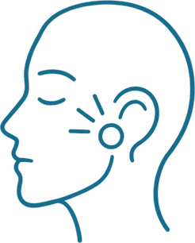
턱 통증
씹거나 입을 벌릴 때 턱 주변의 통증.
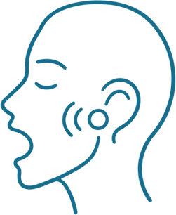
관절음과 개구장애
턱 소리, 걸리는 느낌, 입이 덜 벌어짐.
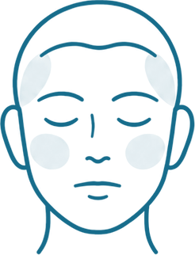
안면 통증
뺨·관자놀이의 통증과 당기는 긴장감.
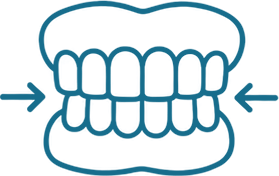
이갈이와 이 악물기
아침의 턱 피로, 수면 중 이갈이.
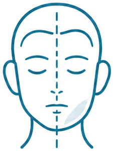
안면비대칭
한쪽으로 치우친 턱끝, 틀어진 얼굴.
전신 증상
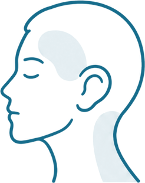
두통
관자놀이와 이마의 두통, 편두통.
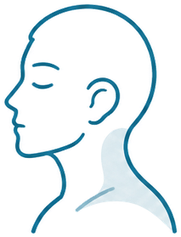
목·어깨 통증
목 결림, 어깨 뻐근함.
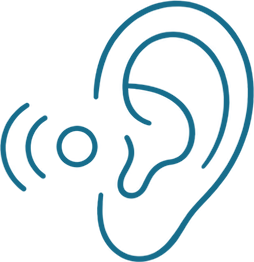
귀 증상
귀 먹먹함, 이명, 귀 주변 통증.
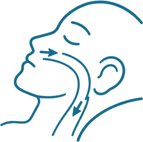
코골이와 수면
큰 코골이, 개운하지 않은 아침.
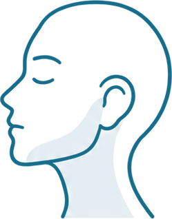
만성 통증
오래가고 되돌아오는 턱·얼굴·목 통증.
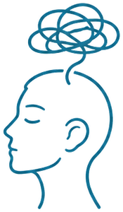
스트레스
긴장할 때 이 악물기, 심해지는 턱 통증.
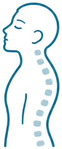
자세·척추
허리와 목의 오래된 통증, 휜 척추.
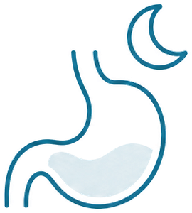
소화·얕은 잠
더부룩한 속, 얕고 자주 깨는 잠.
턱관절 질환의 양상
- ✓턱관절 문제는 원인이 하나가 아닌 경우가 많습니다.
- ✓증상은 시간이 지나면서 나타나는 형태나 아픈 위치가 바뀌기도 합니다.
- ✓아픈 곳이 아닌 다른 곳이 원인일 수 있습니다.
진단 중심, 전신적 접근
진단 우선
원인을 먼저 확인 후 치료장치나 특정 치료보다 먼저, 왜 아픈지부터 확인합니다.
전신적 검사
자세·수면·생활 습관까지 함께 검사치아 맞물림과 턱관절뿐 아니라 자세, 수면, 생활 습관까지 함께 고려합니다.
증례 토론 기준
매달 증례를 검토해 다듬은 기준매달 모여 실제 치료 사례를 검토하고 기준을 세워 진료합니다.
보존적·단계적
작은 치료부터 차례로몸에 부담이 적은 치료부터 시작하고, 꼭 필요한 치료만 진행합니다.
진료 절차
문진과 검사
언제부터 어떻게 불편했는지, 턱관절과 씹는 근육, 치아 맞물림 등을 종합적으로 검사합니다.
결과 설명
검사 결과를 바탕으로 원인과 치료 방법을 설명합니다.
치료 계획 결정
치료 범위와 순서를 함께 정하고, 단계마다 변화를 확인합니다.
MEAW 턱관절 연구회
MEAW 턱관절 연구회는 MEAW 교정을 공부해 온 치과의사들의 임상 연구회입니다.
교합과 턱관절에 관한 MEAW의 관점에, 오래된 통증을 다루는 만성통증의 이해를 더해 턱관절 장애를 진료합니다.
회원 치과 안내
- 이사랑턱치과서울 도봉구 도당로 7 2층 205호02-974-2873
- 이음턱편한치과서울 관악구 은천로 169 1층eumtmj.co.kr02-6745-2754
- 바른턱명인치과경기 안양시 동안구 부림로 188 청용빌딩 3층 302호baruntuk.co.kr031-424-9926
- 서울삼성치과경기 부천시 원미구 상동로 78 상동동양파라곤 2층seoulsamsung.net032-328-2825
- 정발산사과나무치과경기 고양시 일산동구 정발산로 47 웅신아트 309호031-932-2876
- 참플란트치과경기 수원시 권선구 세화로134번길 11 수원역한양아이클래스 2층031-217-2828
- 이수치과충남 서산시 예천1로 24 JS빌딩 4층041-665-2826
- 연세크리스탈치과울산 동구 방어진순환도로 645 3층052-710-3100